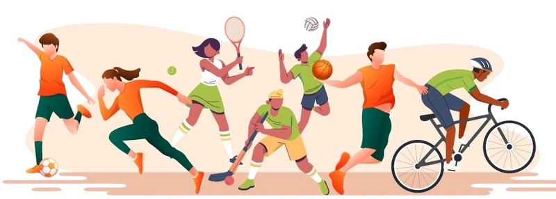
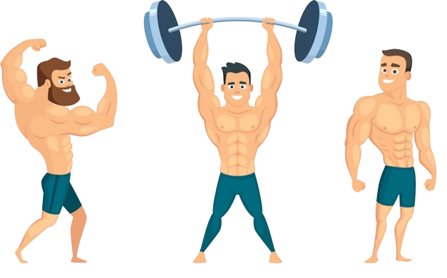
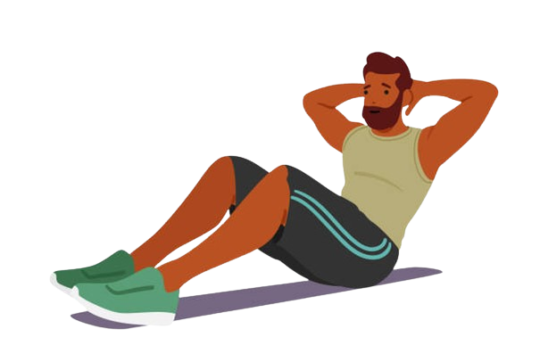
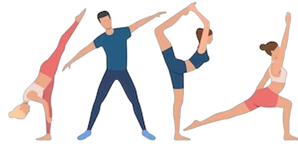
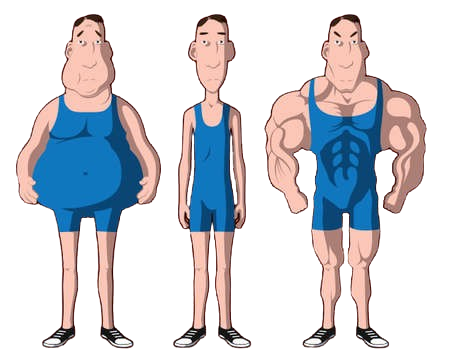

Cardiorespiratory endurance is the ability of the heart, lungs, and vascular system to deliver oxygen-rich blood to working muscles during sustained physical activity. It is essential for activities such as running, swimming, and cycling. Improving cardiorespiratory endurance can lead to better heart health, increased lung capacity, improved circulation, enhanced stamina, and reduced risk of cardiovascular diseases.
Exercises that can help improve cardiorespiratory endurance include aerobic activities like jogging, cycling, swimming, and jumping rope. These activities elevate the heart rate and breathing rate, challenging the cardiovascular system and improving its efficiency over time.
Muscular strength refers to the maximum amount of force a muscle or muscle group can exert against an external resistance. It is crucial for activities that require lifting, pushing, or carrying heavy objects. Building muscular strength can increase bone density, improve posture and balance, prevent injuries, boost metabolism, and enhance overall physical performance.
Resistance training exercises, such as weightlifting, bodyweight exercises, and resistance band workouts, are effective for increasing muscular strength. These exercises target specific muscle groups and gradually increase the resistance or weight to stimulate muscle growth and strength gains.
Muscular endurance is the ability of a muscle or muscle group to perform repeated contractions over an extended period without fatigue. It is important for activities such as hiking, cycling, and swimming. Developing muscular endurance can delay muscle fatigue, improve performance in daily tasks, enhance sports performance, reduce the risk of overuse injuries, and promote overall muscular health.
To improve muscular endurance, individuals can perform exercises with lighter weights and higher repetitions, such as bodyweight exercises, circuit training, and high-intensity interval training (HIIT). These workouts challenge the muscles to sustain repeated contractions for extended periods, gradually improving endurance over time.
Flexibility refers to the range of motion in a joint or group of joints. It is essential for maintaining proper posture, preventing injuries, and performing everyday tasks with ease. Stretching exercises can improve flexibility, leading to increased range of motion, enhanced joint health, better posture, reduced muscle tension, and improved overall functional performance.
Static stretching, dynamic stretching, and yoga are effective methods for increasing flexibility. These exercises target specific muscle groups and gradually lengthen the muscles and connective tissues, improving flexibility and mobility over time.
Body composition is the ratio of fat to lean mass in the body. It is a significant indicator of overall health and fitness. Maintaining a healthy body composition, with a lower percentage of body fat and a higher percentage of lean muscle mass, can reduce the risk of chronic diseases, improve self-esteem, increase energy levels, enhance physical performance, and promote overall well-being.
Achieving and maintaining a healthy body composition involves a combination of regular exercise, balanced nutrition, and lifestyle habits. Incorporating strength training, cardiovascular exercise, and healthy eating habits can help individuals achieve their desired body composition goals.
© 2024 Wellness. All Rights Reserved.